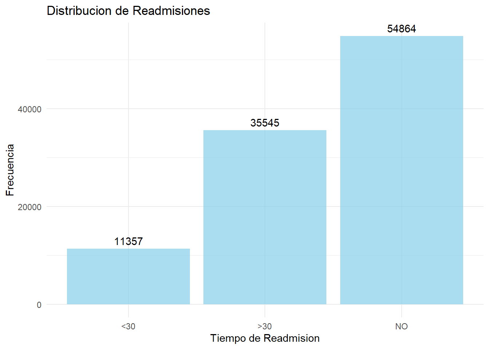
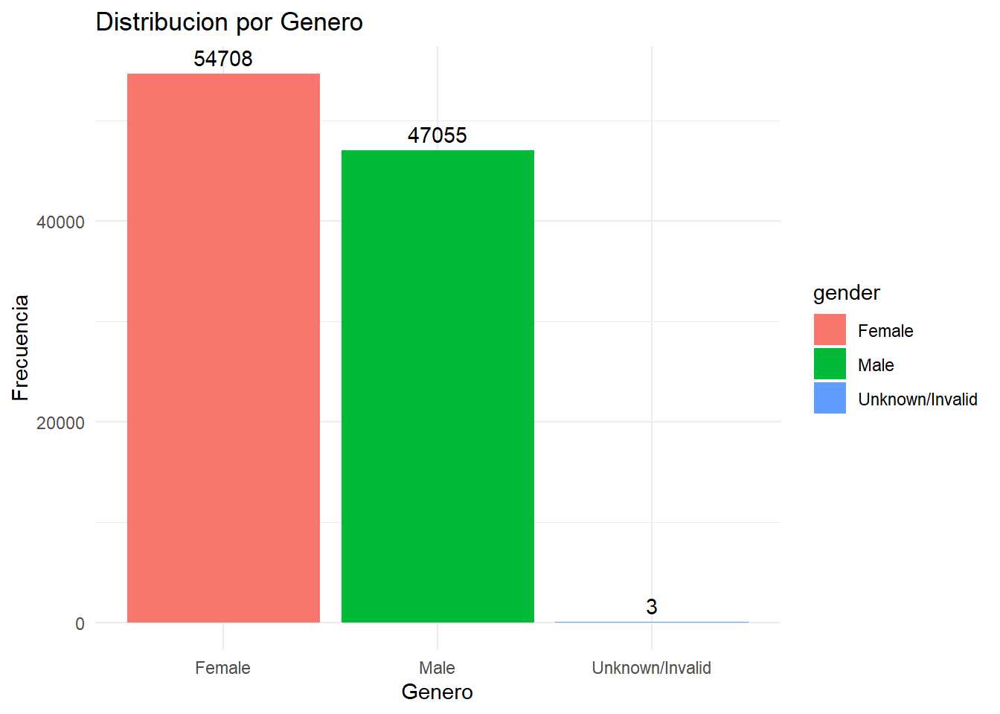
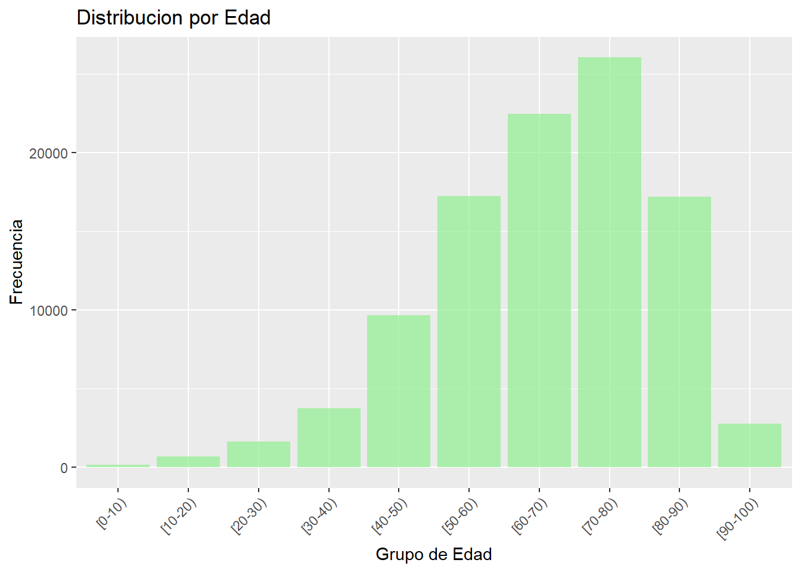
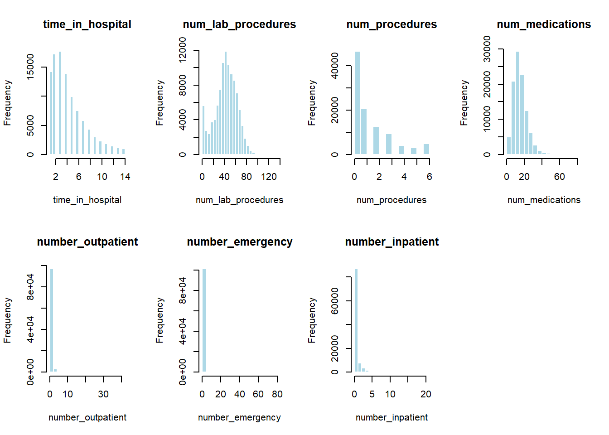
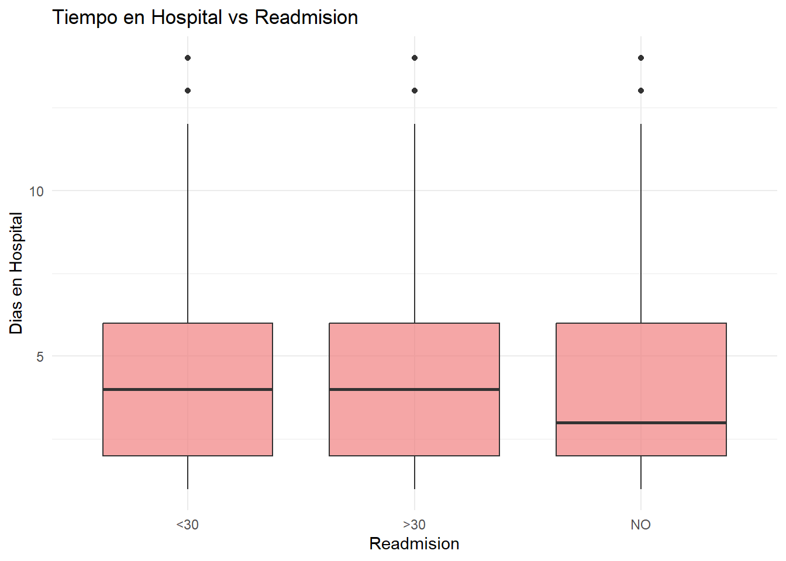
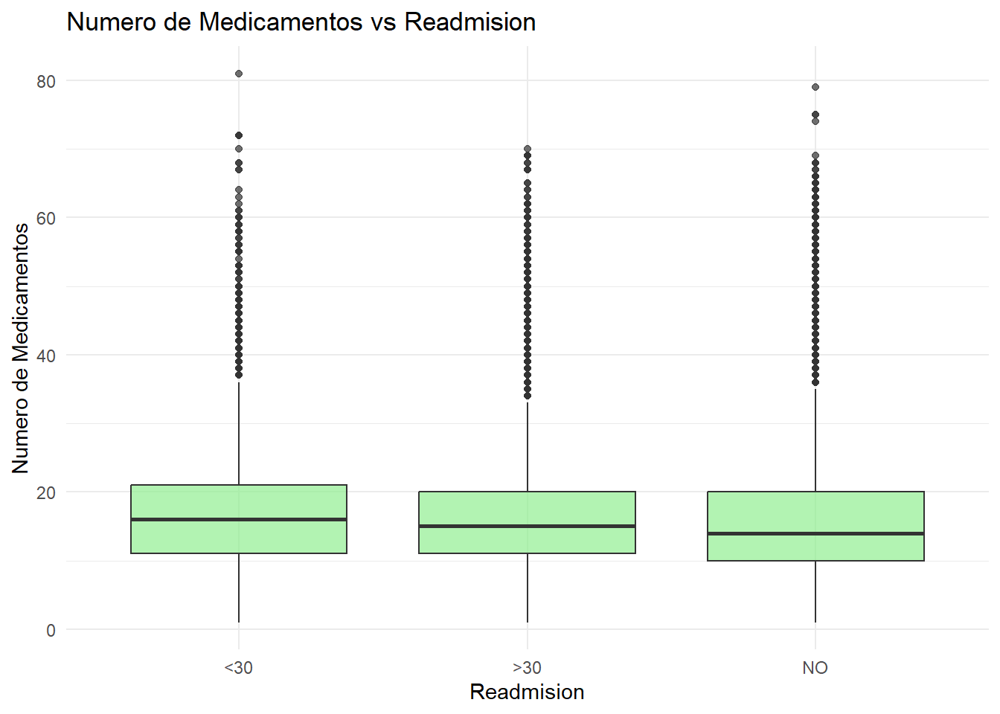
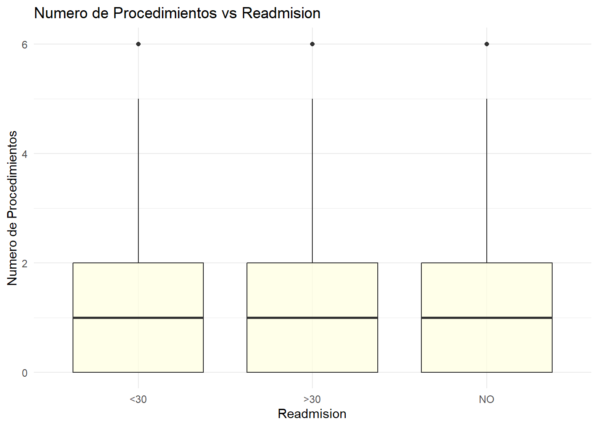
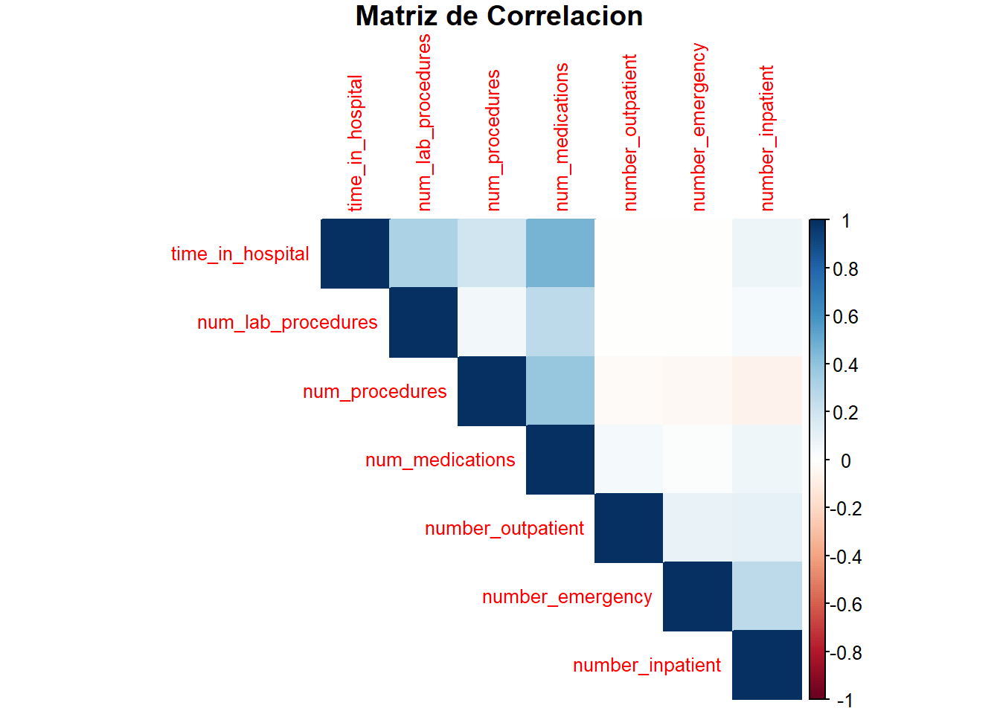

3 Análisis Exploratorio de Datos
En este capítulo se realiza un análisis exploratorio completo del dataset de diabetes, comenzando con resúmenes estadísticos básicos y avanzando hacia visualizaciones y análisis univariados y bivariados.
3.1 Resumen Estadístico
## Resumen de variables numéricas:summary(diabetic_data %>% select_if(is.numeric)) %>% kable() %>% kable_styling(bootstrap_options = "striped")## Warning in attr(x, "align"): 'xfun::attr()' está en desuso.
## Utilizar 'xfun::attr2()' en su lugar.
## Ver help("Deprecated")
## Warning in attr(x, "align"): 'xfun::attr()' está en desuso.
## Utilizar 'xfun::attr2()' en su lugar.
## Ver help("Deprecated")| encounter_id | patient_nbr | admission_type_id | discharge_disposition_id | admission_source_id | time_in_hospital | num_lab_procedures | num_procedures | num_medications | number_outpatient | number_emergency | number_inpatient | number_diagnoses | |
|---|---|---|---|---|---|---|---|---|---|---|---|---|---|
| Min. : 12522 | Min. : 135 | Min. :1.000 | Min. : 1.000 | Min. : 1.000 | Min. : 1.000 | Min. : 1.0 | Min. :0.00 | Min. : 1.00 | Min. : 0.0000 | Min. : 0.0000 | Min. : 0.0000 | Min. : 1.000 | |
| 1st Qu.: 84961194 | 1st Qu.: 23413221 | 1st Qu.:1.000 | 1st Qu.: 1.000 | 1st Qu.: 1.000 | 1st Qu.: 2.000 | 1st Qu.: 31.0 | 1st Qu.:0.00 | 1st Qu.:10.00 | 1st Qu.: 0.0000 | 1st Qu.: 0.0000 | 1st Qu.: 0.0000 | 1st Qu.: 6.000 | |
| Median :152388987 | Median : 45505143 | Median :1.000 | Median : 1.000 | Median : 7.000 | Median : 4.000 | Median : 44.0 | Median :1.00 | Median :15.00 | Median : 0.0000 | Median : 0.0000 | Median : 0.0000 | Median : 8.000 | |
| Mean :165201646 | Mean : 54330401 | Mean :2.024 | Mean : 3.716 | Mean : 5.754 | Mean : 4.396 | Mean : 43.1 | Mean :1.34 | Mean :16.02 | Mean : 0.3694 | Mean : 0.1978 | Mean : 0.6356 | Mean : 7.423 | |
| 3rd Qu.:230270888 | 3rd Qu.: 87545950 | 3rd Qu.:3.000 | 3rd Qu.: 4.000 | 3rd Qu.: 7.000 | 3rd Qu.: 6.000 | 3rd Qu.: 57.0 | 3rd Qu.:2.00 | 3rd Qu.:20.00 | 3rd Qu.: 0.0000 | 3rd Qu.: 0.0000 | 3rd Qu.: 1.0000 | 3rd Qu.: 9.000 | |
| Max. :443867222 | Max. :189502619 | Max. :8.000 | Max. :28.000 | Max. :25.000 | Max. :14.000 | Max. :132.0 | Max. :6.00 | Max. :81.00 | Max. :42.0000 | Max. :76.0000 | Max. :21.0000 | Max. :16.000 |
##
## Variables categóricas importantes:## Race: Caucasian AfricanAmerican NA Other Asian Hispanic## Gender: Female Male Unknown/Invalid## Age: [0-10) [10-20) [20-30) [30-40) [40-50) [50-60) [60-70) [70-80) [80-90) [90-100)## Readmitted: NO >30 <30# Valores faltantes
missing_values <- colSums(is.na(diabetic_data))
cat("\nValores faltantes por variable:\n")##
## Valores faltantes por variable:missing_df <- data.frame(
Variable = names(missing_values),
N_NA = missing_values,
Porcentaje = round(missing_values/nrow(diabetic_data)*100, 2)
)
missing_df %>% filter(N_NA > 0) %>% kable() %>% kable_styling(bootstrap_options = "striped")## Warning in attr(x, "align"): 'xfun::attr()' está en desuso.
## Utilizar 'xfun::attr2()' en su lugar.
## Ver help("Deprecated")
## Warning in attr(x, "align"): 'xfun::attr()' está en desuso.
## Utilizar 'xfun::attr2()' en su lugar.
## Ver help("Deprecated")| Variable | N_NA | Porcentaje | |
|---|---|---|---|
| race | race | 2273 | 2.23 |
| weight | weight | 98569 | 96.86 |
| payer_code | payer_code | 40256 | 39.56 |
| medical_specialty | medical_specialty | 49949 | 49.08 |
| diag_1 | diag_1 | 21 | 0.02 |
| diag_2 | diag_2 | 358 | 0.35 |
| diag_3 | diag_3 | 1423 | 1.40 |
3.2 Graficos Generales
# Distribución de la variable objetivo (readmitted)
ggplot(diabetic_data, aes(x = readmitted)) +
geom_bar(fill = "skyblue", alpha = 0.7) +
geom_text(stat = 'count', aes(label = after_stat(count)), vjust = -0.5) +
labs(title = "Distribucion de Readmisiones",
x = "Tiempo de Readmision",
y = "Frecuencia") +
theme_minimal()
# Distribución por género
diabetic_data %>%
filter(!is.na(gender)) %>%
ggplot(aes(x = gender, fill = gender)) +
geom_bar() +
geom_text(stat = 'count', aes(label = after_stat(count)), vjust = -0.5) +
labs(title = "Distribucion por Genero",
x = "Genero",
y = "Frecuencia") +
theme_minimal()
# Distribución por grupo de edad
diabetic_data %>%
filter(!is.na(age)) %>%
ggplot(aes(x = age)) +
geom_bar(fill = "lightgreen", alpha = 0.7) +
labs(title = "Distribucion por Edad",
x = "Grupo de Edad",
y = "Frecuencia") +
theme(axis.text.x = element_text(angle = 45, hjust = 1))
3.3 Analisis Exploratorio Univariado
# Seleccionar variables numéricas clave
numeric_vars <- diabetic_data %>%
select(time_in_hospital, num_lab_procedures, num_procedures,
num_medications, number_outpatient, number_emergency,
number_inpatient)
# Función para estadísticas descriptivas
describe_numeric <- function(x) {
data.frame(
Media = round(mean(x, na.rm = TRUE), 2),
Mediana = median(x, na.rm = TRUE),
Desviacion = round(sd(x, na.rm = TRUE), 2),
Minimo = min(x, na.rm = TRUE),
Maximo = max(x, na.rm = TRUE),
N = length(na.omit(x))
)
}
cat("Estadísticas descriptivas detalladas:\n")## Estadísticas descriptivas detalladas:stats_table <- lapply(numeric_vars, describe_numeric) %>%
bind_rows(.id = "Variable")
stats_table %>% kable() %>% kable_styling(bootstrap_options = "striped")## Warning in attr(x, "align"): 'xfun::attr()' está en desuso.
## Utilizar 'xfun::attr2()' en su lugar.
## Ver help("Deprecated")
## Warning in attr(x, "align"): 'xfun::attr()' está en desuso.
## Utilizar 'xfun::attr2()' en su lugar.
## Ver help("Deprecated")| Variable | Media | Mediana | Desviacion | Minimo | Maximo | N |
|---|---|---|---|---|---|---|
| time_in_hospital | 4.40 | 4 | 2.99 | 1 | 14 | 101766 |
| num_lab_procedures | 43.10 | 44 | 19.67 | 1 | 132 | 101766 |
| num_procedures | 1.34 | 1 | 1.71 | 0 | 6 | 101766 |
| num_medications | 16.02 | 15 | 8.13 | 1 | 81 | 101766 |
| number_outpatient | 0.37 | 0 | 1.27 | 0 | 42 | 101766 |
| number_emergency | 0.20 | 0 | 0.93 | 0 | 76 | 101766 |
| number_inpatient | 0.64 | 0 | 1.26 | 0 | 21 | 101766 |
# Histogramas para variables numéricas
par(mfrow = c(2, 4))
for(i in 1:ncol(numeric_vars)) {
hist(numeric_vars[[i]], main = names(numeric_vars)[i],
xlab = names(numeric_vars)[i], col = "lightblue",
border = "white", breaks = 20)
}
par(mfrow = c(1, 1))
3.4 Analisis Exploratorio Bivariado
# Relación entre tiempo en hospital y readmisión
diabetic_data %>%
filter(!is.na(readmitted)) %>%
ggplot(aes(x = readmitted, y = time_in_hospital)) +
geom_boxplot(fill = "lightcoral", alpha = 0.7) +
labs(title = "Tiempo en Hospital vs Readmision",
x = "Readmision",
y = "Dias en Hospital") +
theme_minimal()
# Relación entre número de medicamentos y readmisión
diabetic_data %>%
filter(!is.na(readmitted)) %>%
ggplot(aes(x = readmitted, y = num_medications)) +
geom_boxplot(fill = "lightgreen", alpha = 0.7) +
labs(title = "Numero de Medicamentos vs Readmision",
x = "Readmision",
y = "Numero de Medicamentos") +
theme_minimal()
# Relación entre número de procedimientos y readmisión
diabetic_data %>%
filter(!is.na(readmitted)) %>%
ggplot(aes(x = readmitted, y = num_procedures)) +
geom_boxplot(fill = "lightyellow", alpha = 0.7) +
labs(title = "Numero de Procedimientos vs Readmision",
x = "Readmision",
y = "Numero de Procedimientos") +
theme_minimal()
# Matriz de correlación
cor_matrix <- cor(numeric_vars, use = "complete.obs")
corrplot(cor_matrix, method = "color", type = "upper",
tl.cex = 0.8, title = "Matriz de Correlacion",
mar = c(0, 0, 1, 0))